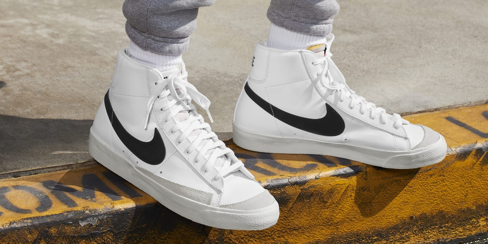
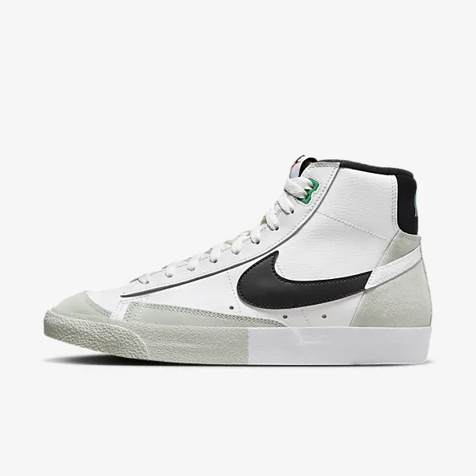
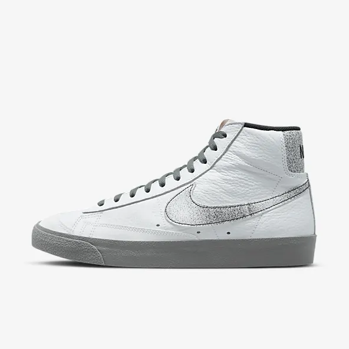
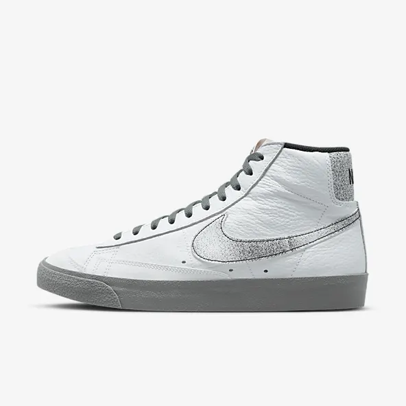
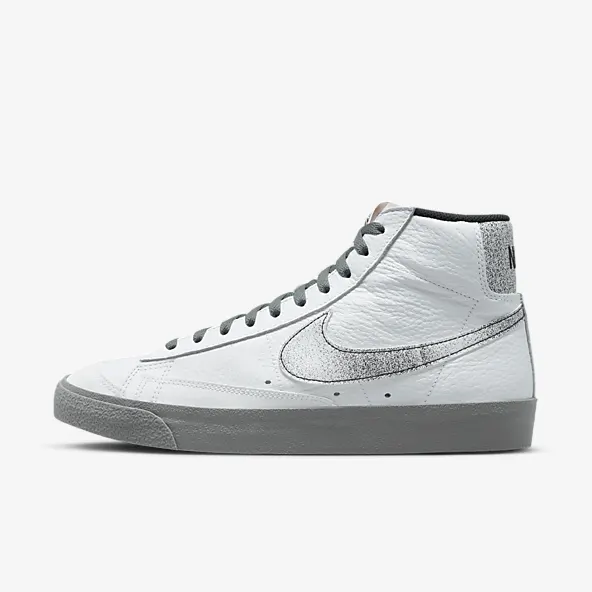

Nike Blazer 77
In the '70s, Nike was the new
shoe on the block. So new in fact, we were still breaking into the
basketball scene and testing prototypes on the feet of our local team.
Of course, the design improved over the years, but the name stuck. The
Nike Blazer Mid '77 Vintage—classic since the beginning.

 

